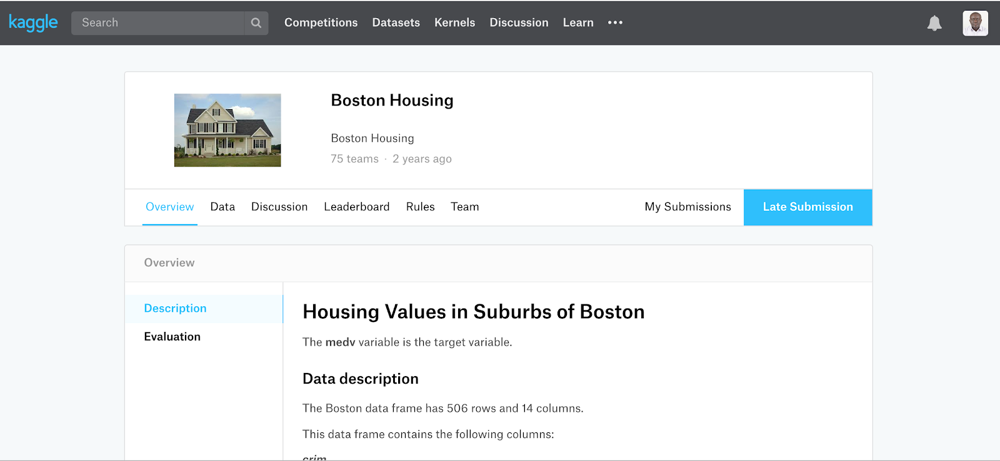
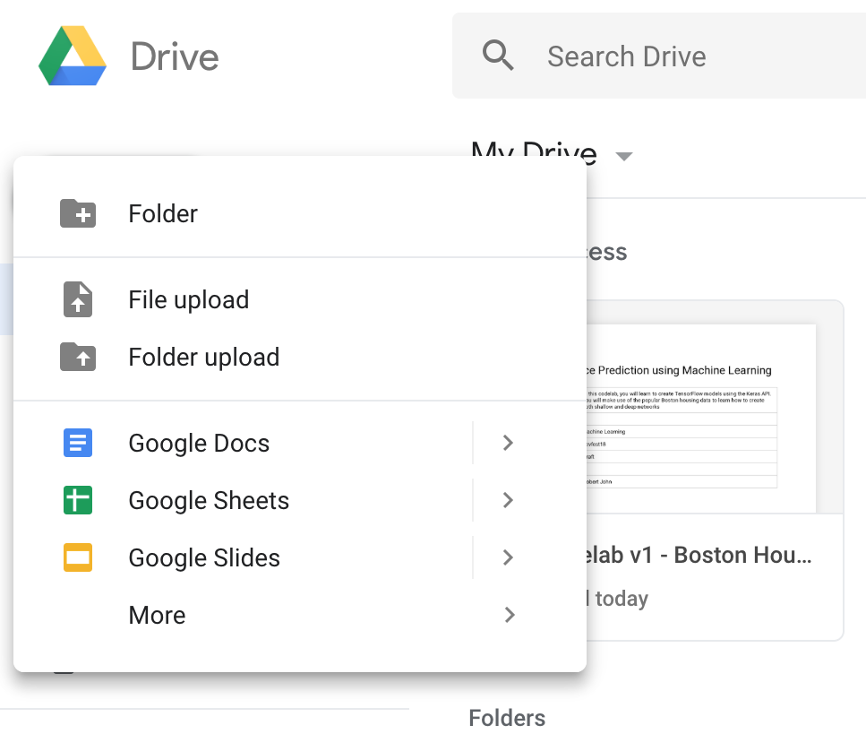
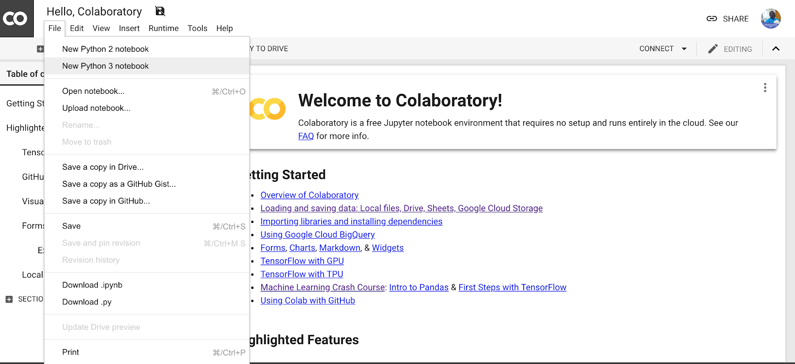
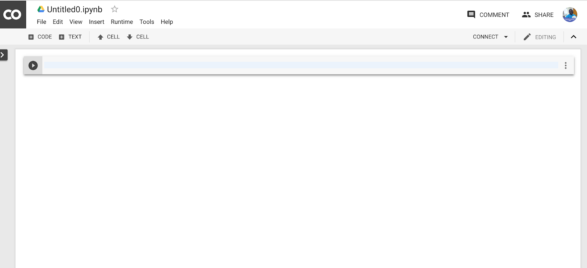
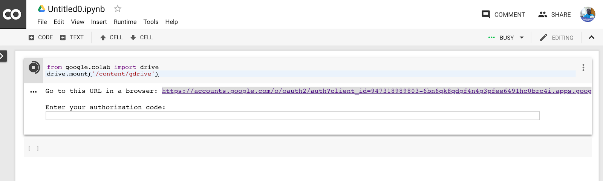
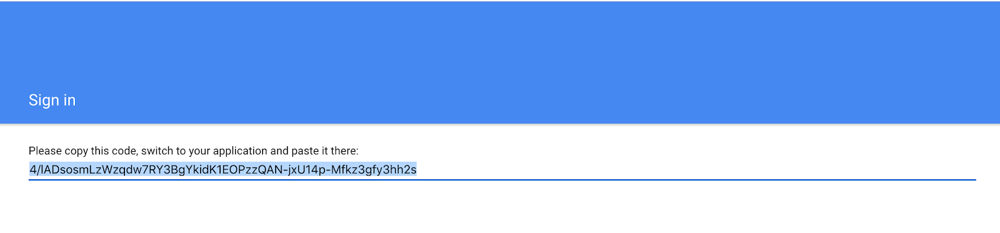
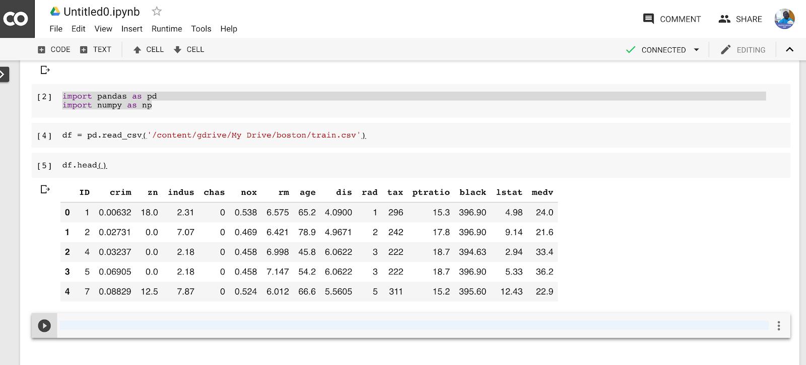
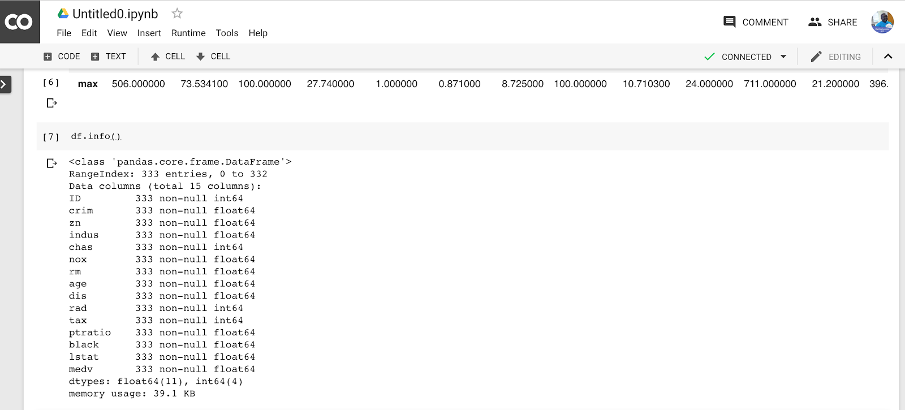

TensorFlow is a numerical computation library that is used for training Machine Learning models. There are two supported high level APIs for working in TensorFlow, Estimators and Keras. We will make use of the Keras API in this codelab.
In traditional rule-based programming, we give our code inputs and rules, and our program produces outputs.
However, in Machine Learning, we give our program examples of the inputs and the outputs, and the program finds the rules. This process is called learning, and depends on the data or examples that we give to our program.
This codelab will walk you through creating and training a Machine Learning model using the Keras API. The data we will be making use of will be the Boston housing data hosted here.
You will train a model to predict the selling price of houses given certain information.
This codelab is focused on Machine Learning. Core data science concepts will be glossed over.
The files we will work with are located here. If you don't have an account, you will need to create one, and also potentially join the competition so you can access the data. The page you are on will display the details of the file you are about to download. You should spend some time reading the details on this page.

When you are done, go to the Data tab, and click on the Download All button. You will get a zip file. Unzip it, and rename it to boston. You should have three files in it.
Go to Google Drive, and click on the New button. Choose the Upload Folder option, browse to where your renamed folder resides, and upload it.

Open Google colab using this link. Click on File and choose New Python 3 Notebook.

After a few seconds, you should have an empty notebook.

We will need to access out Drive. Paste the following two lines of code into the notebook.
from google.colab import drive
drive.mount('/content/gdrive')
Hit Control + Enter to execute the instructions.

You will need to authenticate before you can access your Drive. Follow the instructions by clicking on the URL and generating an authorization code. This will look something like this.

Copy and paste the code into the notebook cell, then hit enter to continue.
In the next cell, type in the following two lines of code.
import pandas as pd
import numpy as np
What we are doing is loading up two libraries called Pandas and Numpy. Pandas is used for reading and manipulating files in a data structure called a DataFrame. Numpy is a numerical computation library that we use for converting structures into a numerical representation. You will need to execute the cell using Ctrl + Enter.
We are now ready to read in our file. We do that with the following code.
df = pd.read_csv('/content/gdrive/My Drive/boston/train.csv')
Put that code into a new cell, and again use Ctrl + Enter to execute it.
The previous code read our file and stored it into a data structure that we called df. We can take a peek at this file using the following code.
df.head()
At this point, you should see the first few lines from the file.

Recall that machine learning is about the data. Our data is stored in a tabular format, in what is called a comma-separated file. There are other file formats for storing data, such as tab-separated and Excel files.
At the top of our file, we have the various columns showing up, along with the name of each column. We are interested in each column, and especially, the property of each column. We can gain additional information about these columns by using the following code.
df.info()
This will give us the following output.

Now, we can see the number of examples we have in our file, as well as the type of each example and whether there are any missing values.
For this codelab, we are interested in predicting the value in the column called medv. This is called our label or target.
The column called ID is there to help us identify each example, and is not used by our Machine Learning model.
All of the other columns will be used to help predict the label, and are called features.
We start training a model by making a random guess about our weights, and then proceed to refine those weights until we have a usable model. To evaluate the usability of our model, we make use of a holdout set, also called a validation set. This validation set is taken out of our training dataset, which we have stored in df.
There are various strategies for splitting our data into training and validation sets. Instead of going into detail about that, we will make use of a library. This library requires us to provide our features and our labels separately, so we will create those in the next step.
X = df.drop(['ID', 'medv'], axis=1)
y = df['medv']
We will then proceed to create our training and validation sets.
from sklearn.model_selection import train_test_split
X_train, X_test, y_train, y_test = train_test_split(X, y, random_state=0, test_size=0.3)
The function train_test_split takes in our features and labels, as well as a random_state and a test_size. Random state is a number that helps us get the same results when we repeat our experiment. On its own, it doesn't mean anything. The test size states what percent of our data should he set aside for validation. It is common practice to use 30% of our data if it is not extremely large. Otherwise, we could use as little as 10%.
We will use the Keras API to build our model. This approach makes it possible to create a model without the math. We will make use of the Sequential model.
We are ready to start working with TensorFlow, so let's import our libraries using the following code.
Import tensorflow as tf
from tensorflow import keras
from keras import Sequential
from keras.layers import Dense
model = Sequential()
We have a model! It can't do anything yet, but we will get to it.
Every model requires one or more hidden layers. Neural networks are made up of different types of layers in different combinations. Examples of layers are:
We will add one dense layer to our model using the following code
model.add(Dense(50, activation='relu'))
This does a number of things:
The output layer is mentioned differently because it determines the type of model you will get. You can have two types of models:
The type of activation you add to the output layer will determine whether it is a regression or classification. For regression, you will leave out the activation, or set it to None. For a binary classification problem, you will set it to sigmoid.
Additionally, for regression or binary classification, your output layer will have only one neuron. For multi-class classification, you will have the same number of neurons as the number of classes you need to predict for.
We want to predict a single numerical value, so we will add an output layer with one neuron and no activation.
model.add(Dense(1))
This is a special step in building a model. Recall that machine learning is about data. What actually happens during training is that certain assumptions are made using random initialization, and the model adjusts these assumptions which we call weights.
We will implement the following code
model.compile()
The model is an equation with weights that are used to aid in computing one or more numeric values. All of this leads to an output. In our case, that output is the selling price of a house. The process of calculating this price is called a prediction or inference.
A good model is one that makes a prediction that is as close as possible to the actual value that it is supposed to predict. There are various ways of comparing the predicted value to the actual value. The algorithm for this is called a loss function, and we have a number:
We will update our compile function with a loss
model.compile(loss='mean_squared_error')
The optimizer specifies how the learning happens. Examples of optimizers are:
We will make use of Adam by updating our compile function
model.compile(loss='mean_squared_error', optimizer='adam')
We train the model by falling fit() on our model.
model.fit(X_train, y_train, epochs=50, shuffle=true, verbose=true)
The first parameter is our dataframe of features, and the second parameter is our series of labels. The epochs is the number of times we would like to loop over our training data. Because we don't want the model to assume any relationship in the ordering of our data, we specify that shuffle is true. We set verbose to true so we can see what is going on with our data.
That is it, you have a model. You can go ahead a make predictions using the following code
y_pred = model.predict(X_test[:1])
You can print out y_pred to see what was predicted.
You made it to the end of the codelab, and have your first model. It is clearly not the best model you could have created because we did not optimize it. In the next codelab, we will perform optimization on our model.